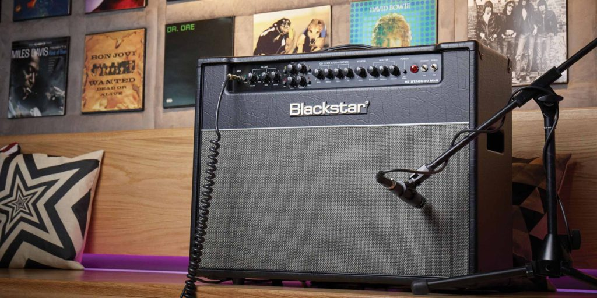

Join our mailing list!
HT Venue Series: HT Club 40
Equipped with 2 channels and 4 footswitchable voices the HT Club 40 MkII is the ideal gigging valve amp for club sized venues. The 40W EL34 driven power amplifier has groundbreaking clean punch and dynamics with expanded tone controls that will easily cut through in a full band situation. Switching to the amazing ISF equipped overdrive channel accesses a further two modes - 'classic crunch' and 'super saturated lead'. The Power Reduction feature allows further flexibility, by allowing the guitarist to attenuate to 10 percent of the 40 watts of power, also making the HT Club 40 MkII perfect for the home and studio use.
Equipped with 2 channels and 4 footswitchable voices the HT Club 40 MkII is the ideal gigging valve amp for club sized venues. The 40W EL34 driven power amplifier has groundbreaking clean punch and dynamics with expanded tone controls that will easily cut through in a full band situation. Switching to the amazing ISF equipped overdrive channel accesses a further two modes - 'classic crunch' and 'super saturated lead'. The Power Reduction feature allows further flexibility, by allowing the guitarist to attenuate to 10 percent of the 40 watts of power, also making the HT Club 40 MkII perfect for the home and studio use.